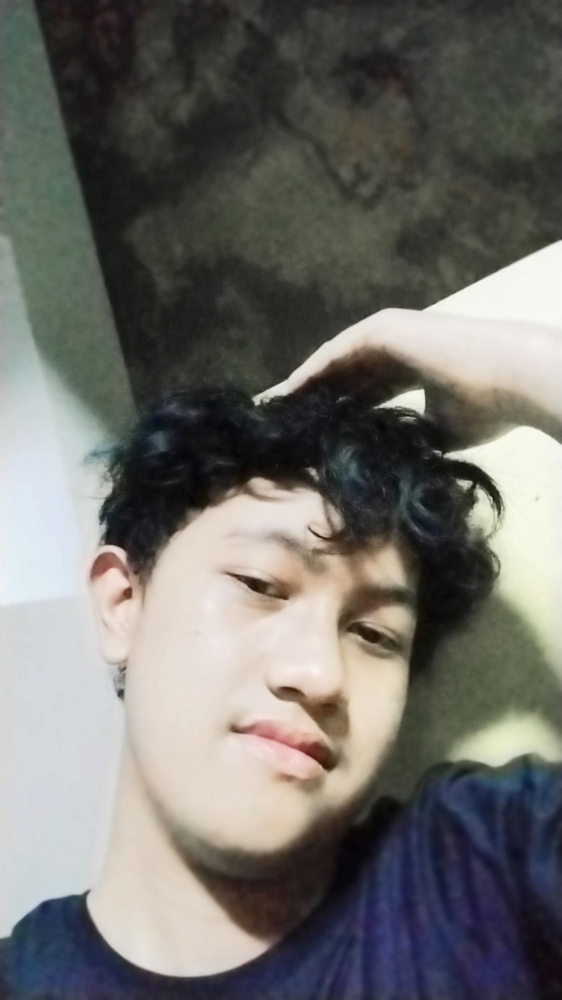

Profil Mahasiswa
Nama
Dhiyaul Auliyah Jadid
Umur
19 Tahun
NIM
251011700503
Kelas
01SIFP009
Fakultas
Ilmu Komputer
Prodi
Sistem Informasi
Silakan hubungi saya melalui WhatsApp di nomor +62 812-3456-7890 atau melalui akun Telegram saya @Dhiyaul_Jadid. Kamu juga bisa klik langsung link di bawah ini:
Frontend Passion
Ketertarikan saya pada Frontend dimulai saat menyadari bahwa tampilan sebuah sistem informasi sangat menentukan kepuasan pengguna dalam mengelola data.
Alasan Memilih SI
Memilih Sistem Informasi di Fakultas Ilmu Komputer karena ingin menjembatani antara kebutuhan bisnis dengan solusi teknologi yang tepat sasaran.
Tools Favorit
Saat ini saya aktif menggunakan Visual Studio Code untuk menulis kode HTML/CSS dan sering mengeksplorasi desain melalui berbagai referensi modern.